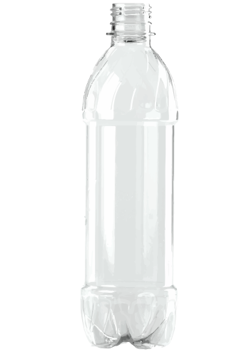

The rate of global plastic production is measured on the scale of hundreds of millions of metric tons, and this trend is steadily increasing as time passes.
Commercial production of plastics, which began in the 1950's, has enjoyed exceptional growth. Now, global annual production has exceeded 330 million metric tons in 2016 alone. Including the resin used in spinning textile fibers, this figure is closer to 400 metric tons, a value that almost exactly matches that of global human biomass.
At the present rate of growth, plastics production is estimated to double within the next 20 years.
While plastic was originally envisioned as a building material for long-term, multi-use, robust products, as the manufacture of plastics became cheaper and cheaper, it started to be used in packaging and other single-use applications.
Now nearly every country on earth is creating millions of tons of plastic waste, causing it to become a global epidemic. Who are the biggest contributors?
Click on a region to zoom in and click on the button in the centre to zoom out to explore more.
Since plastic is a global industry, plastic and plastic waste are imported and exported around the world. Countries import and export plastic products and, unknown to many, even plastic waste for massive capital gains.
The percentage of mismanaged waste is defined as material that is at high risk of entering the ocean through the wind, tides, or carried to the coastline from inner waterways.
The United States, China, and Germany are the top three importers and exporters of plastics worldwide. The United States is the top producer by a large margin, even over China who comes in at 2nd. The top three export nearly twice as much as the rest of the world's top 20 countries. These superpowers, with large amounts of resources are relatively unlikely to mismanage their waste. However, it is common practice for major countries to ship large portions of plastic waste overseas to countries like China and, more recently, Malaysia that are more susceptible to waste mismanagement. In this way plastic waste has become a massive commodity market, with China and Hong Kong importing over 70% of plastic waste around the globe. This means that countries with high levels of mismanaged waste may not necessarily have been the origin of that waste, yet they are impacted by it more severely than countries like the U.S. or Germany might be.
Choices we make each and every day about which products to buy can impact the world around us for an absurdly long time. In the next visualization, we show just how long that coffee cup or water bottle you may have used today will take to break down versus how long you may have used it for. When you consider how others may be impacted much more severely than you, it may cause you to reconsider that next purchase.

The global problem of plastic pollution has impact on people from all corners of the globe. Many of these issues disproportionately impact populations which do not have the resources to control the problem on their own. We are already beginning to see plastic entering the food chain. The problem will inevitably grow, irreversibly damaging us and our planet.